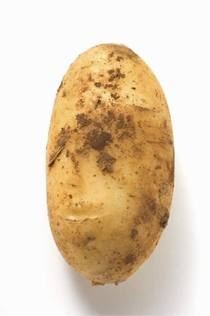

Un verdadero ciego nunca ve
Crear desde lo invisible
SOBRE MI
Soy Josue, estudiante de Desarrollo de Software y artista autodidacta. Me gusta convinar las posibilidades de la programacion con la libertad del diseño 3D.
Soy Josue, estudiante de 17 años radicado en México. Actualmente curso la preparatoria con enfoque en Desarrollo de Software, me gusta combinar el interés técnico con habilidades en diseño 3D y dibujo digital. He desarrollado dispositivos tecnológicos de manera autodidacta, priorizando la resolución de problemas. Aunque evito los reflectores de mi propia historia, creo que cada cosa es necesaria. Creo firmemente que no existen límites para lograr objetivos si se invierte el tiempo necesario. Mi enfoque se basa en analizar patrones y adaptarme, incluso en áreas donde tengo dificultades notables.
METAS
Corto plazo
- Aprender a tocar guitarra eléctrica.
- Desarrollar proyectos tecnológicos con mayor complejidad.
- Mejorar mi nivel de inglés.
Largo plazo
- Graduarme de la preparatoria e ingresar a una carrera universitaria en Ingeniería.
- Dominar áreas avanzadas de inteligencia artificial y robótica.
Motivación
Mi concentracón se enfoca en convertir las debilidades en desafíos. Por ejemplo, el inglés representa una dificultad, pero me ocupo de ello con la misma disciplina que aplico en mis proyectos. La persistencia y el análisis son primordiales para mi progreso.
AREAS DE INTERES
Mi principal interés es la tecnología, especialmente la robótica y la innovación en software. Fuera de lo técnico, dedico tiempo al diseño 3D y al dibujo digital, habilidades que desarrollo de manera autónoma. Por el lado de la música, soy seguidor del grupo Cuarteto de Nos. La motivación es algo necesario para mí, por lo que considero importante encontrar formas de mantenerla. En este sentido, creo que un método efectivo es apoyarme principalmente en la música, ya que me ayuda a concentrarme y mantenerme enfocado. Además, asumo que puedo resolver cualquier problema con suficiente análisis y tiempo, lo cual me da confianza y me motiva a seguir adelante.
Aqui termina esta corta pagina y como despedida aqui hay una imagen de una papa:
